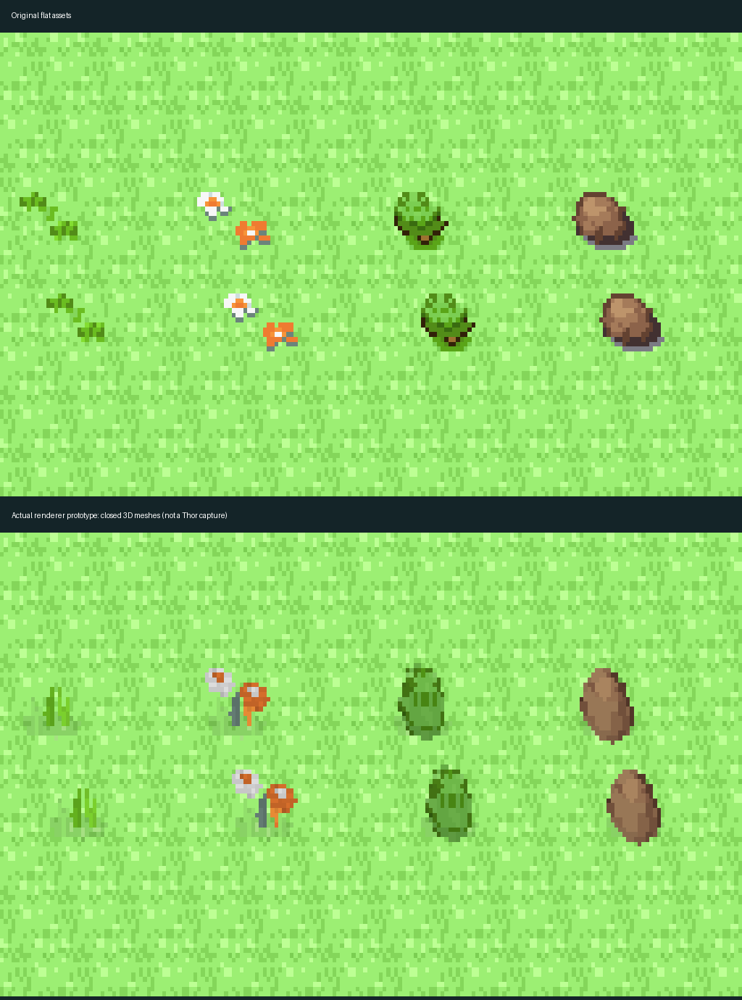

Back to the game builderMore than 3D trees
Unreleased development preview. Only the builds on the verified scenery page have passed Thor qualification.
The new renderer gives selected grass, flowers, shrubs and rocks actual geometry. The comparison below uses the engine's C renderer and ROM-derived textures in an offline asset scene. It is not a Thor screenshot.

Source coverage includes selected Kanto outdoor assets for Let’s Go and Radical Red, snow rocks for Unbound, static rocks and shrubs for FireRed and FRLG+, and live garden-plant trunks and fronds for Let’s Go. All three native games now have behavior-selected encounter-grass meshes and interactive boulder meshes. FireRed and FRLG+ also have solid flower stems, leaves and petals. Qualification is tracked per game on the verified scenery page.
This is not complete coverage of every asset or tileset. Further scenery, dynamic Android objects, and the ten additional hacks remain in progress. Only passing builds replace downloads; see the verified scenery page for the exact list.
Existing six-game Thor screenshots